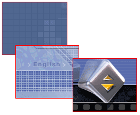

WinClip Tour
WinClip для дизайнеров
WinClip - идеальное средство для дизайнеров. Наверняка Вы, как опытный дизайнер, наработали множество шаблонов, которые часто используете в своей работе.
Вот только некоторые примеры часто используемых шаблонов:
- Графические элементы (стрелки, сетки и т.п.)
- Графические стили
- Маски
- Шаблоны таблиц
- Шаблоны CSS и HTML стилей
- Готовые шаблоны веб-страниц
- Часто используемые изображения
С помощью WinClip Вы сможете удобно организовать работу с шаблонами. Для этого создайте банк с названием, таким как "Мои шаблоны". По мере накопления шаблонов, копируйте их в созданный банк. Шаблоны могут быть мгновенно вставлены в картину или веб-страницу по нажатию клавиши Ctrl+Q и выбору нужного шаблона.

Вы с легкостью сможете создавать сложнейшие и красивейшие образцы дизайна, если будете постоянно пользоваться Вашими заготовками. Вместо того, чтобы постоянно рисовать весь дизайн заново, Вы сможете использовать сделанные заранее заготовки, что несомненно облегчит Ваш труд и ускорит Вашу работу.
Веб-дизайнеру: в банках WinClip Вы можете хранить различные стили, таблицы и шаблоны страниц. Обратите, например, внимание на дизайн этого сайта. Вы видите множество таблиц с тонкими цветными границами. Создать такую таблицу в редакторе типа DreamWeaver довольно сложно, надо набрать вручную следующий код: